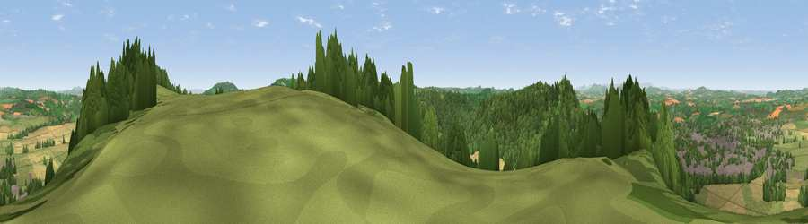

Viewpoint near Weston under Penyard
#3929 in England · top 10% of its area beats it · near Weston under PenyardWhere it is
The exact computed spot (SO 61362 22925). Click the marker for map links.
The view, rendered

A 360° render of this exact spot computed from the terrain model, tree cover and land cover — summer colours, afternoon light, calibrated against photographs of famous viewpoints. Real trees, hedges and buildings will differ in detail.
The panorama
Grey silhouette: terrain skyline in each direction (720 bearings, Earth curvature and refraction included). Dashed green: skyline with trees (+15 m) and buildings (+8 m) as obstacles. Blue strip: how far the ground is visible on each bearing.
Where the view opens
Wedge length = distance to the farthest visible ground on that bearing (vegetation-aware). Rings at 10, 25 and 50 km.
What fills the view
39% woodland · 32% grassland · 22% cropland · 7% built-up
Angular shares of the visible panorama (visual magnitude), not map area. Landscape diversity 0.55 (0–1 Shannon).
Key numbers
More beautiful places nearby
The staircase of upgrades: each row has a higher view potential than everything closer. Driving times are estimates from straight-line distance, calibrated against real road routing — check an actual route before setting out.
| Place | Direction | Drive | Score |
|---|---|---|---|
| Viewpoint near Weston under Penyard | ENE · 1 km | ~2 min | 73.8 |
| Chase Wood Hill | WSW · 1 km | ~4 min | 77.6 |
| Viewpoint near Woolhope | N · 11 km | ~21 min | 80.7 |
| Viewpoint near Putley | N · 15 km | ~27 min | 80.9 |
| Viewpoint near Tarrington | N · 16 km | ~28 min | 81.4 |
| Seagar Hill | N · 16 km | ~28 min | 82.1 |
| Garway Hill | W · 18 km | ~31 min | 84.6 |
| Millennium Hill | NE · 22 km | ~37 min | 86.9 |
51.90352, -2.56300 · source: screening · position refined by local search. Computed location — check access rights before visiting.